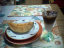

| ２０００年 | バックナンバー：１９９８年 10月 1１月 1２月 １９９９年 １月 ２月 ３月 ４月 ５月 ６月 ７月 8月 ９月 10月 1１月 1２月 ２０００年 １月 ２月 ３月 ４月 ５月 ６月 ７月 |
由起子の大好きな「プール」は、今日でおしまい。。。最後に思いっきり楽しんでおいでぇーと、送り出したのに、残念ながら今日は雨で入れなかったとか・・・（昨日も外が少し涼しかったので中止だったのですぅ）。夜店の金魚すくいの２倍ほどある大きさのところに、１０人ほどの子供たちが入って遊んでいる写真を見て、毎日毎日「プーユ！」と嬉しそうにお話してくれる様子がわかります。由起子は洗剤の容器がお気に入りの様です。プールはまた来年ね！
最近由起子とママはよく一緒にシャワーをする。キャァキャァ言いながら、とっても楽しいひとときだ。由起子は誰に教えてもらったのか、シャワーを持って、ママにかけてくれる。前が終わると、そのあと必ず「ママァ、ウチロ（後）むいてぇー」と言って、背中を手でなぜながらシャワーをかけてくれる。洗顔し終わると顔にもかけてくれる。髪を洗う時は、髪の毛にもちゃぁんとかけてくれるのだ。うーん、なかなか気がきくなぁ。。。
おしゃべりが盛んになってきた由起子は、電話でのおしゃべりも随分できるようになりました。電話の子機をちゃんと耳にあて、「はい、はい、・・・はい」とうなずきながら、いかにもお話しているような「ごっこ遊び」を楽しみ、実際、ママがおばあちゃんと話をしてると、必ずしゃべりたがって、何語かわからんけど、一生懸命お話して「バイバァーイ」で終わる。パパからのカエルコールにも、ずーっと携帯電話を耳にあてていて、なんかかわいいのだ。これからは「電話代」がかさむ時期になるんだろうか？
保育園の帰り道、ママと由起子の会話。。。
由起子：「ママァ、パパは？」
マ マ：「パパは、おしごと」「じゃぁ、ママは？」
由起子：「ママは、あちょびぃー！（遊びぃ？？？）」
マ マ：「なんやって？ 変なこと言うんじゃなぁーい」と言うと、益々喜んで何度も同じことを言います。「パパは、おしごと、ままは、あちょびー」困ったもんです。いったい誰が教えたのぉー？？？
この夏、２度目の市民プールへ。前回の由起子は、一番ちっちゃなプール（３０ｃｍ）からなかなか離れなかったけど、今日は、２番目に小さなプール（６０ｃｍ）によくつかっていて、時々はなんと、２５Ｍプールへ行きたがるほどの成長ぶり。しかし、新調した「キティちゃんの浮輪」は用無しって感じだった。ひたすら歩いてます。途中、２５Ｍプールに入っている時、一度ドボーンと頭からつけちゃおうと、試みたがやはり大泣きしてしまった。もしかしたら、虐待に見えたかも・・・！ 違うんですぅ。。。
朝から由起子をパパ方の実家に預け、パパとママは二人で大阪へ、映画「夏少女」を見に行った。脚本を手がけられた「早坂暁氏」の講演もあり、最近よくマスコミでも取り上げられていたからか、会場は午前と午後の2部構成だと言うのに、ものすごい人・人・人。久しぶりの映画と、ランチは新阪急ホテルでフランス料理。。。うれしかったぁ。。。

→映画の帰り道お邪魔したお宅で。文句なし「超美味しい夕張メロン」と、喫茶店で注文したら出てくるような、「カフェオーレ」。お菓子タイムを狙って行ったような・・・、ごちそうさまでした。。。
マイホームページの表紙に「写真家 うえちゃんのフォトライブラリー」を紹介しています。うえちゃんとの出会いは、今から１０年前の夏。学生時代からの友達：あやちゃんと、北海道／富良野を訪問した時（二人ともまだ若葉マークだったけど、どうしても北海道を車で走りたくて・・・）、民宿「ふらりん」で顔を合わせました。そこに住み込んで、富良野や美瑛の自然をカメラに納め続けていたカメラマンの卵うえちゃんに、是非会って、オススメスポットやメルヘンの木に連れて行ってもらいやぁと、旅行前にあやちゃんの友達から紹介されていた人でした。その後、季節のお便りや写真展の案内をもらったり、結婚式の写真を撮ってもらったり、友達の輪がどんどん広がって、今に続いているという間柄。うえちゃんの写真は心がほっこり暖かくなるような・・・ちょっと幻想的ものもあったり・・・と、とっても素敵です！オススメです！２～3日前、ＨＰを作りましたというメールをもらいました。みなさん、一度覗いてみてください。
保育園から集合写真やプールに入っている様子の写真を持って帰ってきた。ママとパパがそれらの写真を見て話をしていると、トコトコやって来て、先生やお友達を指差し、名前を教えてくれます。ニコニコとっても嬉しそうで、一生懸命教えてくれます。そのことを保育園の日記に書いたら、先生から「お友達の名前をよく覚えてて、毎朝先生にお友達の名前を呼んで、登園してきた子を教えてくれる」とか。由起子は毎日早い時間から保育園に行ってるので、ほとんどのお友達の名前を大きな声で叫んでいるんでしょうね。光景が目に浮かんでくるわ。
最近、由起子の口癖が「これ、うっちゃんの！（私のもの）」「これ、パパの！」「これ、ママの！」。例えばママがカメラを持って由起子を写そうとすると、「ママ違う、これパパの！」と、カメラを取りに来る。お盆の旅行中パパがよく使っていたタオルをママが使おうとすると、やっぱり鼻息粗く取りに来て、わざわざご丁寧にパパへ「はい、これパパの」と渡しに行く。我が子の成長って嬉しいような・・・ちょっとかなわん。由起子は、ちと頭がかたそうだわ。こんなこともあった。先日ベランダの網戸を閉める・閉めないで由起子とパパがやりあっていると「パパ違う、これママの！」と叫んでいた。確かに洗濯物を干したり・といれたり、ゴミや空き缶を出したり、ママがほとんどベランダの網戸を開けたり・閉めたりしているが、こんなことにまで「○○の」だなんて・・・。パパもホトホト手を焼いていた。
昨日も今日も由起子のウンチは、まだ出ていない。保育園でも出ていない模様。と思っていたら、夕食後、ものすごい色（ほんにイカスミスパゲティをたらふく食べた形跡あり）・そして、ものすごい量、、、、ウッ！こんなこと書かなきゃ良かったぁ。。。それにしても、我家で出て良かった。これが、両ばぁちゃんちでなんか出たものなら「なんかの病気かい？」と大騒ぎ（？）になっていたかも！
８月２１日（月）
先生からの日記に「‘休みの間にどこかへおでかけしたぁ？海に行ったのかなぁ？’という言葉に反応して、急に♪うみぃはいろいにゃぁ～♪おおきいにゃぁ～♪（海は広いな・大きいな）」を歌い出したゆきちゃんです」と書いてあった。そういえば海の見える高速道路をよく走ったので、ママが海の歌を何度となく歌ってたね。来年の夏は、どこか近くの海へ泳ぎに行こうね。
夕食はお友達の人と一緒に「イタメシ：カプリチョーザ」へ出かけた。そこで由起子は「イカスミスパゲティ」に開眼したかのように、かぶりついて食べていた。クリスピー生地のピザや海の幸のリゾットにはほとんど見向きもせず、お皿の真っ黒い麺をたいらげると「ママァ、イレチェー」と空になったお皿を指差し、イカスミスパゲティの入ったお皿を引っ張ってこようとする。お友達の人もパパももちろんママもビックリ。イカスミスパゲティを食べたことのある人は、由起子の口の周りや手や服がどんな状態になるか想像ができるでしょう。ひとつ困ったことは、明日から保育園がはじまる・・・、園でウンチをした時、先生方はどんなにビックリするだろう？？？ 思わず日記に、親指を詰めたことに加えて「イカスミスパゲティをたらふく食べたので、ウンチの色に驚かないで下さいね」と書き記した。
日曜日にかけての真夜中（12時半頃）、パパは読書、ママはパソコンに熱中している時、突然隣の部屋で寝ている由起子が、泣き出した。ものすごい声で。何があったんだろーとパパと顔を見合わせるほど、ビックリした。怖い夢でも見たのか「ワンワンー」と言いながら、しがみついて離れない。ヒシッとピッタリしがみつき、ほんと怖がっている様子だ。恐竜博の怪獣でも思い出したのかな？？
まいちゃんをお家へ送るのと、ゆりちゃんのことが気になってたのと、由起子が「プーユ、プーユ」と楽しみにしてるので、姪っ子宅を訪れた。お家に着くやいなや、水が張ってある大きなプールにまっしぐらの由起子。約１時間半近く姪っ子たちと楽しんだ。ゆりちゃんの目はなんともなかった模様。今日はすっかりいつもの「オテンバゆりちゃん」に戻っていた。
＜由起子の怪我＝Ｐａｒｔ②＝＞ お姉ちゃんたち二人に手を引いてもらい２階に登る途中、階段（の下から３段目）から、落っこちてしまいました。ママはその場に居なかったのでどういう状況かわからないけど、左足の脛を打ったらしく、傷と内出血がおきていた。オイオイ泣く由起子。ママが付いて行かなかったからだねぇ。。。ごめんねぇ。。。
旅の６日間の洗濯物はものすごい量。ウーン、何回洗濯機を回したことか・・・。今、我家はあちこちが物干し状態。夜、姪っ子二人がお泊まりに来るので、大掃除もしないと・・・。元気にやって来た姪っ子たち。由起子も大はしゃぎ。夕食後、お風呂も皆で入り、一緒に歯磨きをして、さぁ寝ようか・・・という時に、ゆりちゃんが突然「目が痛いよぉー」と泣き出した。それも尋常じゃない泣き方。異物があるらしいけど、ママにはどうすることもできず、結局、ゆりちゃんはお迎えに来てもらい、自分のお家へ帰っていった。まいちゃん一人が泊まることに。いつか（近い将来）パパも由起子が姪っ子宅にお泊まりに行きたいと言って、でも何かあって途中で迎えに行くことになるかもねぇ。
＜由起子の怪我＝Ｐａｒｔ①＝＞ 洗面所の下を開けたり・閉めたりしているうちに、パッタンという良い音が鳴って扉が閉まった。同時に由起子の「ギャァーーーォ」という泣き声。あぁ、指を詰めてしまったんだ。見ると、右手の親指の爪の付根部分が青く・赤く内出血をおこしている。時が経つごとに内出血の部分が広がってくる。「いちゃい、いちゃーい！」確かにこれは痛いよなぁ、、、パパと納得してしまった。
９時に恐竜博会場に到着。開場までまだ３０分あるというのに、すでにたくさんの人がゲート前に並んでいる。今日はものすごく日差しがきつく、暑い！ 由起子はあんまり嬉しそうにないなぁ。「ゆきちゃーん、ギャオォォォーだよぉ」というと、愛想程度に「ギャオォォォー」と言うものの、いまいち心の底からワクワクしているような感じはしていない模様。予定時間より早くに開場。ベビーカーを押していたので、長い階段を見て「ウェッ！」とビビッテいたら、スタッフの人がやって来て「お手伝いします」と軽々上まで上げてくださった。ちょっと感動！（ボランティアさんなのかなぁ？アルバイトさんなのかなぁ？とにかく若い兄ちゃんだった）パークトレインに乗り、イマジネーションゾーンに着いて喜んでいるママたちは由起子のベビーカーをトレインに忘れてしまうほど、ちょっとハイになっていた。スタッフの人が大きな声で「どなたかベビーカーをお忘れですぅ～」で初めて気がついた。ママはもう「（テーマ館）恐竜アドベンチャーシアター」に並んでいました。恥ずかし！ この迫力ある大型ＣＧ映像をとっても楽しみにしていたママなのに、始まるやいなや由起子が怖がって泣き出した。どんなにあやしてもダメ。周りの人に迷惑がかかるし、由起子は頑として「デリュゥゥゥ（出る）」と泣き叫ぶし、ママは泣く泣く由起子と外へ出た。あぁ、ＣＧ見たかったよぉ・クーラーの中に居たいよぉ。。。あんなに泣いてた由起子は外に出るなり、元気になり、あっちこっちへ行きたがる。トホホ・・・。ＣＧが怖いのなら、「夢と感動のミュージカル」なら大丈夫だろうと（ママも見たい！）整理券まで貰うために並んだのに、結局始まりの大きな効果音でビックリして泣いてしまい、これまた外へ出る羽目に・・・。ママの内心は「えーかげんにせぃ！」マジで怒ってました。恐竜博物館は比較的ゆっくり見ることができたので、来た甲斐があったけど、ここでも標本が動いたりする仕掛けだと、泣き出す始末。由起子にはちょっと早かったねぇ。２時過ぎに会場を後にし、昼食後、帰路に向かう。たいした渋滞にもあわず、６日間／１７００ｋｍの旅は終わりました。一人で運転してたパパ、お疲れさま。楽しい旅をありがとう！
民宿で簡単な朝食を済ませ、今日は石川県・金沢・兼六園（パパが行ったことが無かったので）に向かうことにした。今回の旅行は４～５泊の予定で荷物を準備してきた。すでに４泊が過ぎて、本来なら「もう終わりだぁ」と思う時期なのに、予定（予約）のない旅というのは、まだまだ何やらワクワクするところがあるから面白い。全然終わりに近付いているという実感がない。兼六園はお盆の期間、無料開放だった。知らずにやってきたので、なんだか得した気分。こんなことに喜ぶママはホント小市民だわぁ。
金沢を後にして、目指すは福井県勝山市。ただいま「恐竜エキスポふくい２０００」というのが開催中なので、そこに立ち寄ることにした。駅前の観光案内所で民宿でも探そうと思っていたら、小さな駅で宿泊情報も何もない。トホホ・・・。結局自分たちでペンションを見つけました。今回の旅で一番高かったけど、トータルにすると、食事は美味しかったし、シーツのノリの付き具合がとっても心地良く、ベッドは由起子と二人寝ても狭くなかったし、バス・トイレ付きだったし、ウン満足です。夜は持って行った花火を少しだけしました。由起子は見てるだけで、怖がって花火を持とうとしないから。アカンタレヤネェ。。。
草津温泉から白根山を越えて、滋賀高原～魚津というのが今日のコース。白根山のドライブルートは、フランスのバス観光を思い出しました。あたり一面、緑の木々でおおわれ、その緑がとても綺麗！ 標高２０００ｍ以上のところがドライブルートになっているからすごい！ 今日のコースは全く予定してなかったけど、意外に良かったので、こういう旅の仕方も良いなぁと思ってしまった。白根山の湯釜は、どこか外国の氷河湖を想像させる湖面の色。もっとゆっくり散策したかったけど２時間ほどで、ドライブ再開。志賀高原・横手山を走りぬけ、車はドンドン走ります。いつか「夏の志賀高原」にも滞在したくなりました。その後、新潟を通り富山県・魚津で宿泊することに。見つけた民宿は、となりにある入浴施設と繋がってて（１１時まで自由に入り放題）、もう一方はなんと墓地。。。お客は私達だけで部屋はふた部屋も貸してくださった。由起子は大きな大浴場に大はしゃぎ。色んな種類の大きな浴槽があって、泡風呂にも喜んで入ってました。
朝から終日の雨模様。早々にチェックアウトし目指すは「華厳の滝」へ。山また山がひたすら続き、急カーブの多い「いろは坂」はきっとお天気だと素晴らしい景色なんだろうけど、残念なことに今日はダメ。由起子が車酔いしない子でホント良かった。滝は雨のせいもあってかものすごい水量でびっくりした。あんまり期待していなかっただけに、ドッドォーという轟音と共に流れ落ちる様は大迫力。残念だったのは中禅寺湖の美しさがいまいちわからなかったこと、、、ちょっと後悔。その後ひたすら群馬に向かって車は走ります。足尾銅山付近を突っ走り、ナビを頼りに走る・走る。ゴールデンウィークの旅行でお友達になった「群馬のトドおばさん」を訪問するが、前もって連絡をしていなかったのでおばさんはお出かけでした。その後、草津温泉へ向かう。日光はガイドブックがあったけど、草津のは持ってなくて、宿探しに一抹の不安があった。ペンション３軒電話連絡するも「満室」で断わられ、いよいよ車中泊かぁ～とドキドキしてたら、旅館案内所で偶然にも６帖和室部屋にキャンセルありの情報をもらい、かろうじてお布団で寝れることになりました。温泉にゆったりつかり、豪華な食事に大満足。ただ今夜のお部屋はちょっと湿気臭かったねぇ。贅沢言っちゃダメだけど。
ＡＭ６時半起床。奈良と違って、ここ日光は快適な夜～朝である。きりふり亭は標高８００ｍくらいのところなので、もちろんクーラーはありません。涼しい。。。美味しいサンドイッチとスープの朝食後、9時にお出かけ。目的地はパパが行きたがっていた東照宮。昨年１２月に世界遺産に登録された日光の社寺は歴史的な建造物が見事で、今年は特に、徳川家光の３５０回忌を記念して「大猷院・皇嘉門」が初の一般公開とあって、日光行きを決めたような次第です。とにかくママはあんまり期待をしてなかったので、東照宮の「陽明門」や「神厩舎」には、ずーっと見入っていたかったほど。本物の凄さを思い知りました。他にも見るもの全てが素晴らしかった。建物の彫刻は絢爛豪華で、世界遺産に指定されたのも納得。由起子は頑張って東照宮の参拝はほぼ自分で歩きました。
今日から夏休みの我家は、なんの予約もしてないけれど、車に色んな荷物を積み込んで、ＡＭ５時２０分、日光方面に出発しました。渋滞にかかることもなく、名阪国道・東名阪・東名とグイグイ突っ走り、東京に着いたのが12時頃。ここまでは良かった。。。東京の地道が大変だった。東北自動車道への乗り換えのため、ほんの２０Km程の都内の国道が大渋滞。全く進まない。。。２時間近くかかってしまいイライラ。
目的地の栃木県「日光」には、夕方４時半頃到着。まずは宿探しにあっちへ行ったり・こっちへ行ったり。ガイドブックに載っている良さそうなペンションを探して行って見ると、パスゥ～というようなのにあたってしまったり、予算や設備など色々考えれば考えるほど悩んでしまい、結局パパの一声で「きりふり亭」というペンションに飛び込みで行き、聞いて見ると、今夜と明日の宿が確保できました。明日の宿はラッキーな事にキャンセルのところへ入れてもらえました。こじんまりとしたアットホームな感じで、なかなかＧＯＯＤ。夕食も満足の美味しさ。ホントに車中泊にならなくて「ホッ！」としたママでした。長時間のドライブも平気の由起子でしたね。
保育所にも８月中は「特別保育日」や「夏休み」があって、今日は特別保育の日。お弁当・お茶持参で、８時～１７時までの保育時間である。明日からパパもママも夏休みなので、今日はおばあちゃんに由起子の送り迎えをお願いした。しかしお弁当はママの役目である。今朝は５時に起きて頑張りました。でも、やはり朝からお弁当を作るなんて、ママにはとってもきついですぅ。。。さぁ、明日から夏休みだぁ！
姪っ子に（おもちゃの）聴診器をもらってから、由起子の遊びは専ら「しんしゃちゅぅ～（診察）」である。ちょっとグズグズ言い出してても「じゃぁ、診察しよっか」って話を持っていくと、低い声で「ハイ」と返事をし、聴診器を探して、ニッコリ笑いながら戻ってくる。ママが由起子の診察をする時は、ちゃんとお腹を出し、お腹が終わると背中を向け、最後にはお口をアーーンと開けるのだ。そう、小児科でやってもらうその通りを真似ているのである。そして時に、ママやパパを診察してくれる。やっぱりお腹・背中・お口の順番だ。
ここ最近、由起子は自分の年と名前が言えるようになりました。
ママ ：「ゆっちゃん、トシいくつ？」
由起子：「ひとーちゅ（ひとつ）」・・・少し前までは「イチュチュ」と言い続けてた。
ママ ：「お名前は？」
由起子：「ニャカノォー・ウキコ」・・・自分では「なかのゆきこ」と言ってるつもり。
このやりとりが結構面白くて、ママは何度もやってしまう。ホント楽しい！！
今日はママと二人で久々のお出かけ。電車にイッパイ乗って、名塩まで行きました。ママの会社の後輩が５月に出産して、友達数人と赤ちゃんに会いにやって来たのです。赤ちゃんは「宝くん」といって、とってもお鼻が高く涼しげな顔立ち。ふと由起子を見ると、お鼻は・・・お鼻はママに似たんだもの仕方ないよね。由起子は愛嬌でがんばれぇ！
朝８時半にお家を出て、帰り着いたのが７時半。大阪環状線の夕方ラッシュはとってもきつかった。。。おまけに「鶴橋」駅には、エレベーターが無いし、下りのエスカレーターも無いので、ママはくたびれましたぁ。。。
「ママと、パパと、プーユ（プール）」が、やっと実現しました。市民プールに行ってきました。この暑い中、由起子は１時間もプールに入ってました。入るといっても最初は、及び腰で「イヤンイヤン」の連発、パパとママがひざ下ぐらいのプールに座ると、やっと由起子も入ってきて、それでも歩くだけ。つかったりキティちゃんの浮輪に乗ったりもせず、ひたすら浮輪は首のところで持って、ちっちゃいプールの端から端へ移動するだけ。周りの子がどうしてようと、パパが沈めようとしても、頑として我が道をいっていた。このプールの疲れで、お昼寝は１時から４時までのバク睡でした。ちなみに市民プールは０歳から料金が必要というのを初めて知りました。
ついこの間まで、ママがトイレに入ると絶対一緒に入りたがったのに、昨日から、ママをトイレに閉じ込めようとします。ドアノブも前まで届かなかったのに、一人で開けることができるようになりました。
朝、いつものように６時半にお目覚め由起子は、２日酔いのパパの背中におかまいなしにのっかっていく。「パパァ、おっきー（起きてよー／遊んでよー）」と言われれば、パパも起きざるを得ない。
午前中はおじいちゃんの月命日のおまいりと、お墓参りに行く。お墓の雑草にパパもママもビックリ。月に一度の月命日にはお墓参りをして、草刈なんかはしているのに、この真夏の１ヶ月の雑草の生命力はスゴォーイ！ 久々に草刈で滝のような汗を掻く。夜の合唱の練習、先週から「伝説」のテープを聴いてママと練習していた由起子は「ママ、おじいちゃん！（この伝説には’おじいさん’という歌詞が出てくるから）」と練習に行く足取りも軽かった。しかし、とっても残念なことに今夜の練習は「フォーレのレクイエム」で、由起子はほとんど知らない。ちょっと練習に身が入らなかったみたい。いちおう、ママの説明にコクコクうなずいて、わかりましたって顔はしていたけど、「伝説」歌いたそうでした。こんな日もあるよ。
今夜はボイストレーニングの日。もちろん練習に行く予定で、夕食のご飯はタイマーセットで出社した。大急ぎで由起子のお迎えに行って、急いで夕食・・・。ところが、由起子の一言「ママァ、ちんどぃ。。。（しんどいよぉー）」で、自分のことばかり考えてちゃダメだなーと思い、由起子に合わせてゆっくりペースで晩御飯を食べた。「しゃーあいなぁー、ボイスはお休みしよう」って思ったら、さっきまで由起子に早く早くとせかして、ママのペースに合わさせようとしていたこと・・・悪かったわねぇ。。。
知らない間に「お尻のアセモ」がひどくなっていました。首筋のアセモがマシになったとホッとしていたら、このお尻のアセモはなかなか痛そうで、お風呂上りなど「いちゃーい」と、由起子も半泣き状態です。小児科でもらっている軟膏をウッスラ塗ってはいるけれど、、、どなたかこのお尻アセモの対処法教えてくださーい。
最近よく真夜中に「ままぁ、おちゃ、ほしぃーーー」と目覚める由起子、、、そのせいか朝は７時になっても起きようとしません。なかば無理に起こすと「ママァ、、、ねむちゃい（もっと寝かせてー）」目をこすって、とっても可哀想。もっと寝かせてあげたいけど、ママもパパも遅刻しちゃいますぅ。。。
お家で教えたこともないのに「あ・い・う・え・お」と、由起子は楽しそうに口づさみます。おもわず日記で尋ねると、保育所で見る１２チャンネルのお歌らしい。ママは見たことないのでわからないけど、保育所に行ってるおかげで、ホント色んなこと教えてもらえるね。